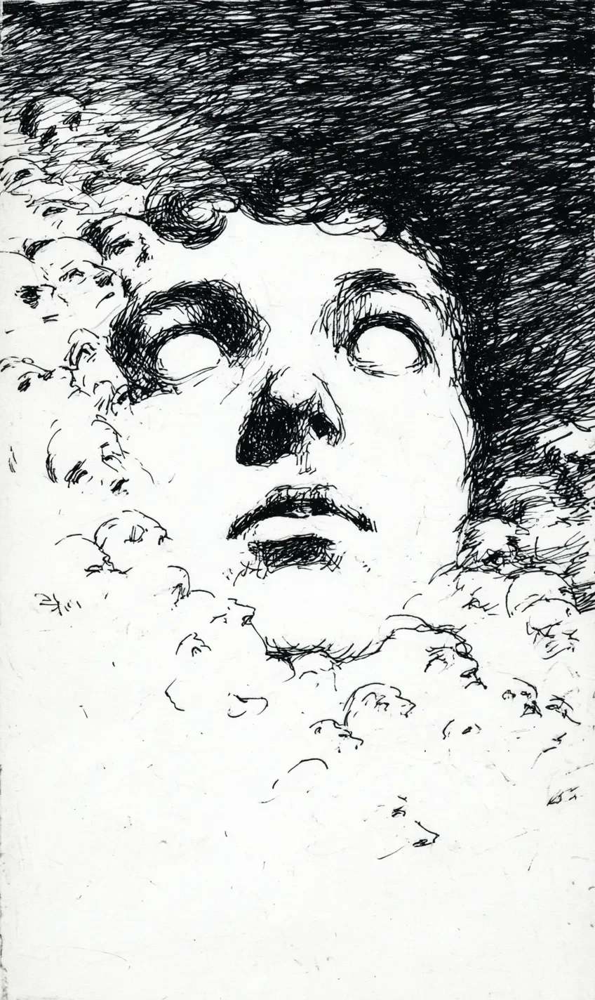

내 머릿속에서 얼굴들이 피어나기 시작했다.
Faces began to bloom inside my head.
밤마다 하나씩, 기억에서 떨어져 나온다.
One by one each night, they detach from my memories.
처음 나온 얼굴은 내 것이었다.
The first face to emerge was mine.
열두 살의 나.
Me at twelve years old.
그 아이는 나를 올려다보더니 물었다.
The child looked up at me and asked:
“아저씨 누구예요?”
“Who are you, mister?”
대답하려 했지만, 입에서 구름만 나왔다.
I tried to answer, but only clouds came out of my mouth.
그 후로 얼굴들이 계속 늘어났다.
After that, faces kept multiplying.
엄마. 아빠. 첫사랑. 이름을 잃어버린 친구들.
Mom. Dad. First love. Friends whose names I’ve lost.
전부 내 안에서 태어났지만, 아무도 나를 알아보지 못한다.
They were all born inside me, but none of them recognize me.
지금 그들이 내 눈을 채우고 있다.
Now they’re filling my eyes.
시야가 흐려진다.
My vision blurs.
나는 가라앉는다.
I sink.
내가 만든 얼굴들의 바다 속으로.
Into an ocean of faces I created.
따뜻하다.
It’s warm.
곧 나도 그들 중 하나가 되겠지.
Soon I’ll become one of them, too.
누군가의 머릿속을 떠다니는 얼굴.
A face drifting inside someone’s head.
기억되지 않는 채로.
Unremembered.